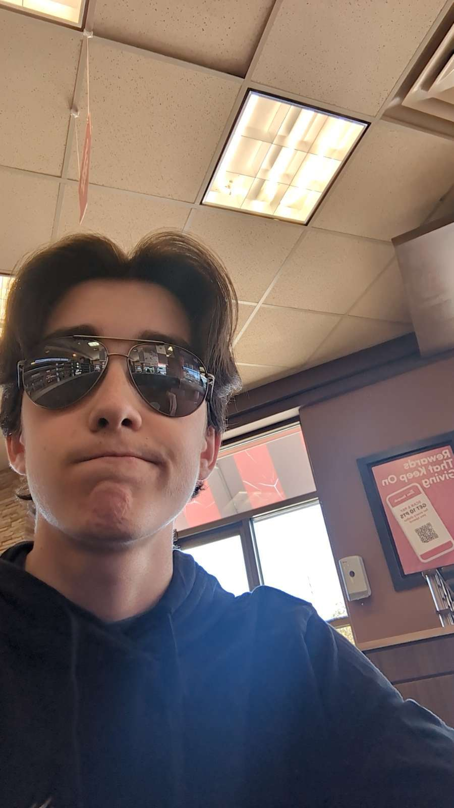

Meet The Creators
Yaksh Butani
Team Leader, Cheif Web Developer and Cheif AI developer
Hey there! I'm Yaksh, I am a grade 10 Massey student and I'm all about robotics and tech. Being a robotics student, I get to dive deep into the world of technology every day, and I absolutely love it. Whether I'm programming the robot or wiring robots, there's always something new and exciting to explore. I'm fascinated by how technology can revolutionize industries and change the way we live our lives. Outside of class, you'll often find me geeking out over the latest tech news or attending tech conferences to stay up-to-date with the ever-evolving field. I'm on a mission to make a positive impact through my work, and I can't wait to see where this journey takes me!

Kyle Baker
Web and AI Engineer
Hey! I'm Kyle Baker, and I'm a grade 10 student at Vincent Massey Secondary School. I specialize in C++, and I am also a part of my school's robotics team. Whether I'm programming or wiring, I love working on the robot. I've also trained many neural networks, and I'm fascinated by how far AI has come! I also implemented an object detection model on our robot last year, that tracked game pieces for the robot. Anyways, hope you have a great day!
Arshvir Ghotra
Web and AI Engineer
Hello, my name is Arshvir Ghotra. I am a grade 10 student at Vincent Massey Secondary School. I have been on a computer for as long as I can think of and love computer related subjects. I have a passion for making the world a better place no matter what it takes.